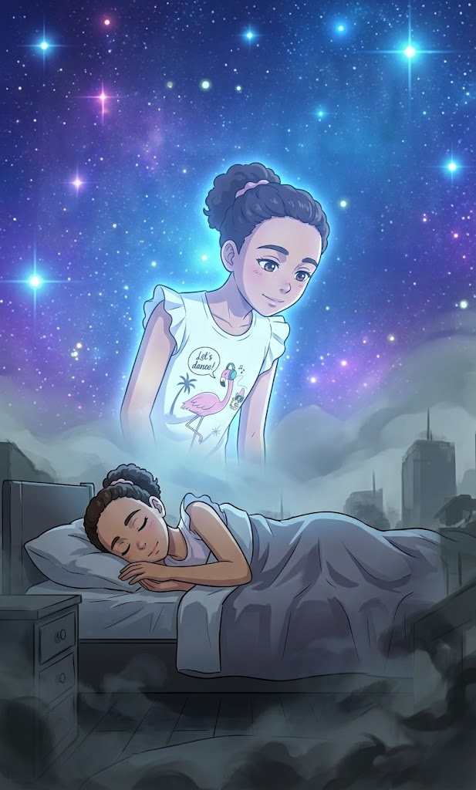
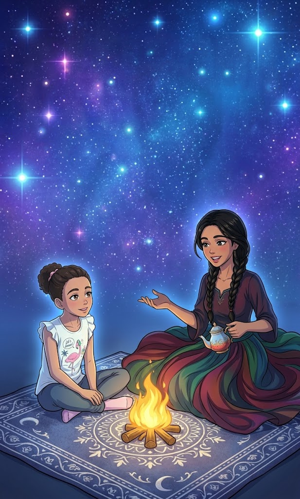
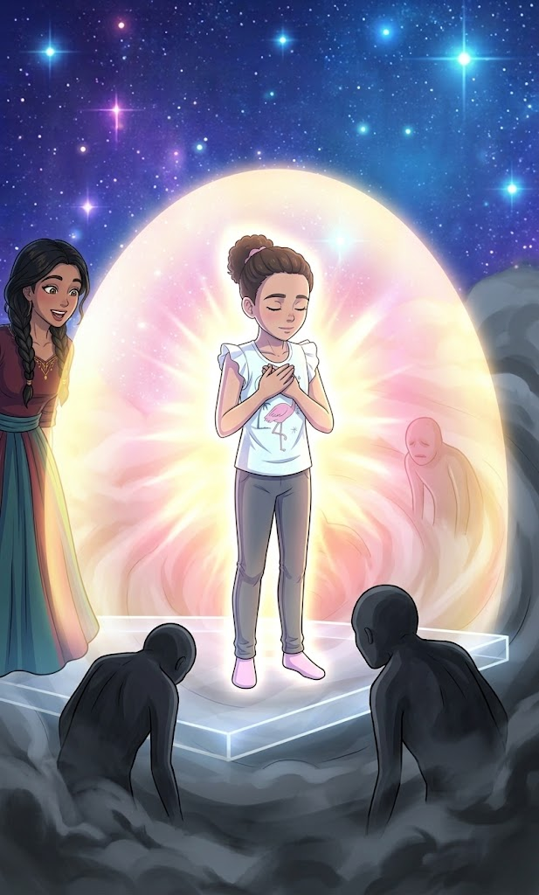
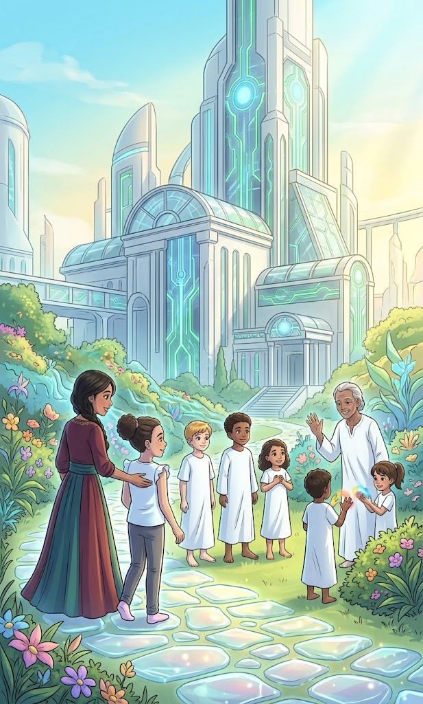
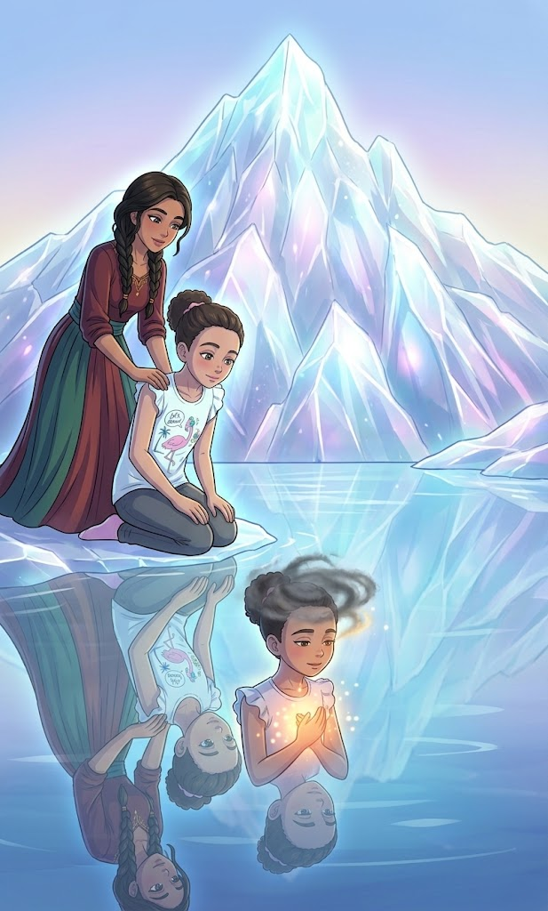
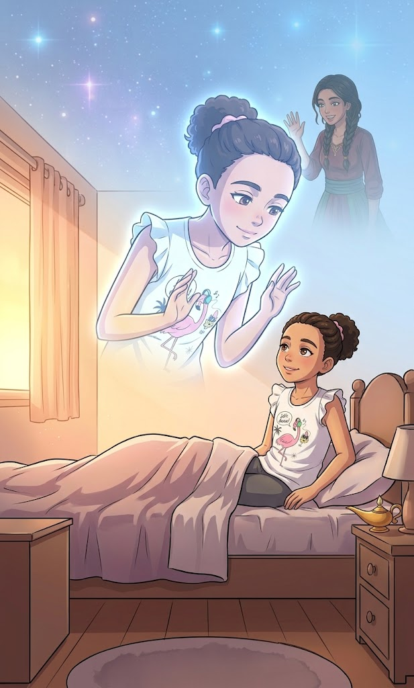
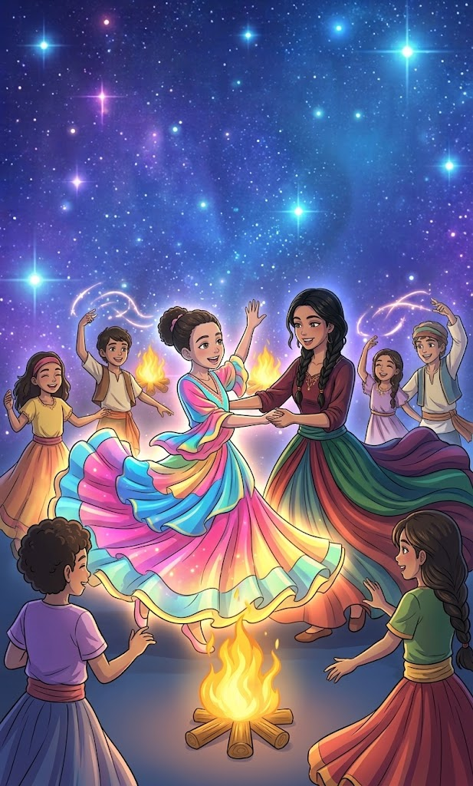

Angélica é uma garota de 10 anos muito curiosa que, ao adormecer, descobre que o mundo não acaba quando fechamos os olhos. Guiada por Dona Maria, uma mentora espiritual carinhosa e sábia, ela embarca em uma viagem astral inesquecível. Em uma jornada de aprendizado em 7 etapas através das dimensões espirituais, Angélica descobre a força dos pensamentos, a cura do perdão, o valor da natureza, o amparo aos necessitados e o poder da gratidão, percebendo que o amor une todos os cantos do universo.
Capítulo 1: O Segredo da Luz Azul

Angélica encarava as estrelas no teto do seu quarto, sentindo o peso bom do cansaço chegar. De repente, uma sensação leve de flutuação tomou conta do seu corpo. Quando abriu os olhos, percebeu que não estava mais presa à cama: seu corpo parecia feito de uma luz suave e translúcida.
Ao seu lado, sorrindo com um olhar incrivelmente acolhedor, estava Dona Maria, uma senhora de cabelos prateados preso em um coque e avental bordado com pontos reluzentes.
Não tenha medo, minha querida disse Dona Maria, estendendo a mão. Hoje você deixou o corpo físico descansando. Vamos passear pelo plano astral, onde a alma viaja livre.
Angélica olhou para as próprias mãos, admirada:
Eu estou voando, Dona Maria? Parece que fiquei leve como uma bexiga de ar!
É a sua energia, Angélica. No mundo espiritual, não usamos pernas para andar, mas sim a nossa intenção. Para onde você deseja ir, o seu pensamento te leva.
Com um simples desejo, as duas atravessaram o teto do quarto e subiram ao céu noturno, deixando para trás as luzes da cidade.
Nosso corpo físico é apenas uma roupa que a alma usa. A nossa verdadeira essência é a luz e a liberdade do pensamento.
Capítulo 2: A Cidade dos Pensamentos Coloridos

Dona Maria guiou Angélica até uma dimensão vibrante, onde os edifícios pareciam feitos de cristal e as árvores cantavam ao vento. Mas o que mais chamou a atenção da menina foram as nuvens coloridas que saíam da cabeça das pessoas que caminhavam por ali.
O que são essas cores em volta de todo mundo? perguntou Angélica.
São os pensamentos e sentimentos explicou Dona Maria. No plano astral, nada fica escondido. Quando alguém sente raiva ou inveja, a luz ao seu redor fica escura e pesada. Mas quando alguém pensa com amor, carinho ou gratidão, a luz se transforma em um arco-íris brilhante.
Angélica viu um rapaz que parecia triste. Ela fechou os olhos e desejou do fundo do coração que ele se sentisse abraçado. Na mesma hora, uma faísca dourada saiu do peito de Angélica e tocou o rapaz, que sorriu imediatamente.
Viu só? disse a senhora, acariciando os cabelos da menina. O bem que você deseja aos outros é uma força real. Cada bom pensamento é um presente que você envia pro universo.
Nossos pensamentos têm poder. Cuidar do que pensamos e sentimos é a melhor forma de espalhar a luz pelo mundo.
Capítulo 3: A Ponte do Perdão
Conforme avançavam, o cenário mudou para um vale calmo, cortado por um rio de águas prateadas. Do outro lado da ponte, Angélica avistou uma garotinha emburrada. Era Sofia, sua colega de escola com quem havia discutido na semana anterior.
O que a Sofia faz aqui? perguntou Angélica, cruzando os braços. Ela foi muito chata comigo.
Dona Maria sentou-se em uma pedra à beira do rio e chamou Angélica para perto.
Muitas vezes, as pessoas nos magoam porque também estão machucadas por dentro. O rancor é como carregar uma pedra pesada na mochila: só faz mal para quem carrega.
Angélica olhou para a mochila invisível de suas mágoas e percebeu como aquilo a deixava cansada. Ela deu um passo à frente, atravessou a ponte e disse baixinho: "Eu desculpo você, Sofia."
No mesmo instante, a sensação de peso sumiu do peito de Angélica. A imagem de Sofia sorriu docemente antes de desaparecer como um sopro de brisa.
O perdão não muda o passado, Angélica, mas liberta o seu futuro
ensinou Dona Maria, dando-lhe um abraço quentinho.
Perdoar não significa concordar com o erro do outro, mas libertar o próprio coração do peso da raiva.
Capítulo 4: O Hospital das Luzes de Ouro

Dona Maria conduziu Angélica até uma floresta exuberante, onde a grama brilhava como esmeralda e pequenas luzes pisca-pisca dançavam entre as flores. Não eram vaga-lumes, mas sim pequenos espíritos protetores das plantas e dos animais.
Uau, as flores parecem sussurrar! exclamou Angélica, ajoelhando-se para ver uma orquídea reluzente.
E estão sussurrando mesmo sorriu Dona Maria. A natureza é viva no plano físico e no espiritual. Todos os animais, árvores e rios possuem uma energia sagrada. Quando você cuida de uma planta ou trata um animal com carinho na Terra, essa energia de amor ecoa por todo o plano espiritual.
Uma pequena raposa feita de luz aproximou-se e encostou o focinho na mão de Angélica, que sentiu uma onda de carinho imediata.
Prometo que nunca mais vou pisar nas flores de propósito ou ignorar um bichinho precisando de ajudadisse a menina, de olhos brilhando.
Respeitar e proteger a natureza e os animais é uma forma de honrar a vida e manter a harmonia do universo.
Capítulo 5: O Hospital das Luzes de Ouro

Dona Maria suavemente segurou a mão de Angélica e as duas voaram até um grande edifício que parecia feito de mármore e raios de sol. Lá dentro, vários trabalhadores espirituais com túnicas brancas cuidavam de almas que pareciam cansadas ou tristes.
Este é um dos hospitais do plano astral explicou a senhora sábia. Aqui acolhemos aqueles que passaram por momentos difíceis e precisam restaurar a sua paz e a sua fé.
Angélica observou uma senhora idosa que recebia uma luz azul no peito dada por um dos enfermeiros espirituais. Aos poucos, o rosto da idosa relaxou e ganhou um tom saudável.
Nós também podemos ajudar daqui? perguntou a garota, curiosa.
— Com certeza! Sempre que você faz uma oração sincera ou envia um bom desejo para alguém que está doente ou triste na Terra, os médicos espirituais usam essa sua energia de amor para levar alívio a quem precisa.
Angélica fechou os olhos e pensou em seu avô, enviando-lhe todo o seu carinho em forma de uma luz dourada.
Fazer o bem e desejar a cura do próximo ativa forças invisíveis capazes de levar alívio e esperança até onde não podemos alcançar fisicamente.
Capítulo 6: O Templo da Memória e do Aprendizado

Em seguida, elas chegaram a uma grande biblioteca sem paredes, cujas prateleiras de luz flutuavam no ar. Cada livro parecia contar a história de uma vida cheia de aprendizados.
Por que precisamos passar por dificuldades no mundo físico, Dona Maria? Às vezes as coisas parecem injustas ou difíceis desabafou Angélica.
Dona Maria tirou uma pequena semente brilhante do bolso do avental e a colocou na mão de Angélica.
Para que esta semente virar uma grande árvore, ela precisa ficar no escuro da terra, enfrentar chuvas fortes e empurrar a terra para cima até ver o sol. Os desafios da vida física são como a chuva e a terra. Eles não vêm para nos destruir, mas para nos ensinar a ser fortes, sábios e pacientes.
Angélica olhou para a semente, que começou a brotar na sua mão em uma linda flor de luz. ela compreendeu que cada erro e cada desafio na escola ou em casa eram apenas etapas para se tornar uma pessoa melhor.
As dificuldades da vida não são punições, mas lições valiosas que fazem nossa alma crescer e evoluir
Capítulo 7: O Despertar Radiante

Angélica abriu os olhos devagar em seu quarto físico. O sol da manhã atravessava as O horizonte astral começou a se tingir de tons dourados, rosas e lilás. O sol no mundo físico estava prestes a nascer, anunciando que era hora de retornar.
Nossa jornada de hoje está chegando ao fim, minha pequena guardiã disse Dona Maria, com a voz tomada por um carinho profundo. É hora de voltar para o seu corpo e acordar para um novo dia.
Ah, Dona Maria... vou sentir tanto a sua falta! E se eu esquecer de tudo o que aprendi aqui? perguntou a menina, segurando a mão da mentora.
A sua mente consciente pode até esquecer alguns detalhes ao acordar, mas o seu coração guardará a essência de tudo. Sempre que se sentir sozinha, lembre-se de que o amor une todos os mundos e que nunca, jamais, você estará só.
Dona Maria tocou suavemente a testa de Angélica. A menina sentiu uma onda de paz e aconchego indescritíveis. A paisagem ao redor foi se transformando em uma névoa suave e quentinha.
cortinas, iluminando o ambiente. Ela respirou fundo, sorriu com a alma leve e levou as mãos ao peito. Sabia que aquele seria o primeiro dia do resto de sua vida: um dia repleto de paz, luz e amor por todos os seres.

Créditos
Título Original: O Relógio de Estrelas e o Voo de Angélica
Desenvolvimento e Roteiro: Criado para jovens leitores e amantes de histórias edificantes.
Personagens Principais:
Angélica: Uma garota de 10 anos, curiosa, corajosa e de coração puro.
Dona Maria: Uma mentora espiritual amorosa, protetora e cheia de sabedoria.
Gênero: Infanto-juvenil / Espiritualista / Literatura para dormir
Público-Alvo: Crianças a partir de 11 anos e leitores de todas as idades que buscam paz, esperança e boas lições antes de descansar.